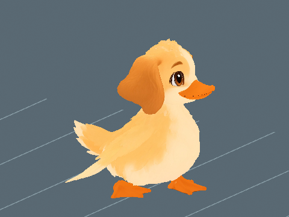

Audio and animation previews, videos and model downloads are retained locally and are not hosted on this website. Text, assessments and still images remain available.
Sunnyside Backyard / Creature profile
Labraduck
Least Concern
Perspective modelling reference · Open image for full size
About Labraduck
A golden-feathered guardian with soft hanging ears, bright eyes and a broad amber bill. Labraduck counts every egg before settling beside the water, keeping a watchful eye on its home.
🔋 Endurance: 20% less stamina used by running and gym training. Action costs are unchanged.
One active creature total: following or mounted. Choosing another replaces the current creature.
Hatch bonuses
First hatch: +1,000 Running XP and $5,000 Cash. Later hatches: +100 Running XP (10%), with no further discovery Cash.
One first-hatch award per player and species, shared across qualities and sizes. The certificate shows both credited amounts with the skill icon. Fixed amounts are independent of XP boosts. All hatch bonuses
Measurements from the current creature catalogue.
Labraduck has a 3.8-stud low-poly pet model in Roblox Studio with four 1K textures. The Backyard guardian remains a separate model. Installed Blink needs work because both painted eyes still show beneath the lids at full closure. The Blink download shows the separately reviewed offline expression.
Parent reference masses: Labrador (30.62 kg) and Duck (1.08 kg). Parent reference sizes: Labrador: 0.5842 m (shoulder height); Duck: 0.575 m (body length). Pet weight uses the retained species calibration multiplied by relative height and relative front-to-back length. Both dimensions scale together, so individual mass still scales quadratically. Length includes the tail and uses installed model depth normalized to standard height; it is an extent, not a curved body measurement. One stud is exactly 0.28 metres. Low-bodied parents use body length; the other recorded heights and bird body lengths are size proxies. These are game balance references, with range midpoints and explicit estimates rather than measured population means. Pet height is base height times its internal scale, with no four-stud floor or extra quality height bonus. Pet kg uses scale squared. Egg kg is the base creature kg times scale, and base egg dimensions multiply directly by scale. See the scale tables for the quality bands.
A Standard pet at internal scale 1 hatches at 3.8 studs (1.064 m) and 49.75 kg. The base statistics describe catalogue dimensions at scale 1.
Egg
Base height
2.670 studs
Base weight
49.75 kg
The egg and creature share one internal scale. Egg kg is the base creature kg times scale. All base egg dimensions multiply directly by scale, and quality chooses the scale band.
Installed Roblox model
Studio Edit / Idle pose. This is the installed creature in Roblox Studio. Live gameplay acceptance remains separate. The low-poly 3.8-stud pet is in the foreground. The existing Backyard guardian is separate and is visible in the background.
Reference chase at the separate 7-stud guardian size and 17.5 studs/s. This local preview uses the new fitted skin and leaves the existing guardian installation and its review separate.
Retained earlier assessment. The current source needs a new review; this number does not approve the changed version.
Local 7-stud reference using the low-poly rig. The existing installed Backyard guardian is separate.
2 November 2026. Patrol: 6 studs/s (1.68 metres/s) at 7 studs (1.96 metres) tall. The shown cycle repeats 1.86 times per second.
A steady waddle with alternating foot support. The existing patrol stride now takes about 1.86 cycles per second.
The existing body-animation scores remain separate. This review assesses patrol speed and cadence; it does not award a replacement animation score.

|
These are offline source-skin previews at the installed guardian scale. Route turns, obstacles, water transitions and multiplayer still need in-game review. Chase and egg-return tuning are unchanged. Existing developer decisions are preserved.
Labraduck has a 3.8-stud low-poly pet model in Roblox Studio with four 1K textures. The Backyard guardian remains a separate model. Installed Blink needs work because both painted eyes still show beneath the lids at full closure. The Blink download shows the separately reviewed offline expression.
Download every action
Action downloads
Labraduck action files
Action
GIF
MP4
Idle
Walk
Run
Chase
Flap
Quack
Blink
PatrolWalk
Guardian Chase
Recorded parent height and weight
These are the exact reference inputs used for this creature. Some are range midpoints or explicit estimates, rather than measured population averages. Height and body length are labelled separately.
Scroll the table sideways on a narrow screen.
Parent inputs and their arithmetic averages. Select a linked value to open its recorded source.
equal-sex midpoint of male 22.5 to 24.5 and female 21.5 to 23.5 inches
midpoint of 50 to 65 cm mallard length; bird body-size proxy
(Parent 1 size + Parent 2 size) / 2
How the weight was recorded
midpoint of 55 to 80 lb adult breed range
reported adult mallard mean
(Parent 1 kg + Parent 2 kg) / 2
Check the calculation at scale 1
Average parent size
(0.5842 + 0.575) / 2 = 0.5796 m
Average parent weight
(30.617484975 + 1.082) / 2 = 15.8497424875 kg
Chosen game height
3.8 studs x 0.28 = 1.064 m
Parent-derived creature weight
15.8497424875 x (1.064 / 0.5796)^2 = 53.413214198581 kg
Game balance multiplier
1x; 53.413214198581 x 1 = 53.413214198581 kg (historical parent baseline)
Retained height-only calibration
53.413214198581 kg
Length correction
53.413214198581 x 3.539428571429 / 3.8 = 49.750593796393 kg
Catalogue creature weight
49.750593796393 kg
Base egg height, 50/50 blend
1.8 x sqrt((3.8 / 4) x (49.750593796393 / 4)^(1/3)) = 2.670488347514 studs
Matches the recorded averages and catalogue weight.
Game height is chosen for the creature design; it is not the average parent height. Individual pet height and length both multiply by saved scale. Weight uses their product, so uniform scaling remains quadratic. Values above are displayed to twelve decimal places; calculations use the full recorded values.
Scale, egg weight and carrying impact
These ranges use the actual quality bands and shared creature scale. Most rolls are near the midpoint.
Computed ranges at each quality. Carry speed is a percentage of normal movement before other modifiers.
Base rates are per second for a creature placed at Home. Eggs still incubating and creatures in inventory do not earn. Currency starts at $0. Hatched pets placed in your Home garden pay into your wallet every second while you are online. The currency is Cash. Normal income scales with saved size and quality: Standard 1x, Fine 2x, Superior 4x, Epic 8x and Legendary 16x. Followers do not earn garden income; active petting temporarily gives the petted creature 3x. See Game mechanicsXP and skill levels for the full rules. Grim Peeper pets earn $10 per second.
Reviewed
Reviewed means Daniel has reviewed the in-game model and animations and is happy with them.
Daniel tells Codex when he approves how a model looks and works. Codex records Daniel's approval and updates this shared site. Reviewed shows a tick when Daniel is happy with the in-game model and animations.
✗ Not reviewed
Daniel: ✗ Pending
Daniel returned Labraduck to WIP on 28 October 2026 because of animation issues. Model and animation reapproval is pending.
Pet icon
The face icon used in the game. Labraduck also represents the Pets menu.
Collection artwork
Full-body artwork and its matching silhouette, prepared at 256 by 256 pixels for the Pets collection.